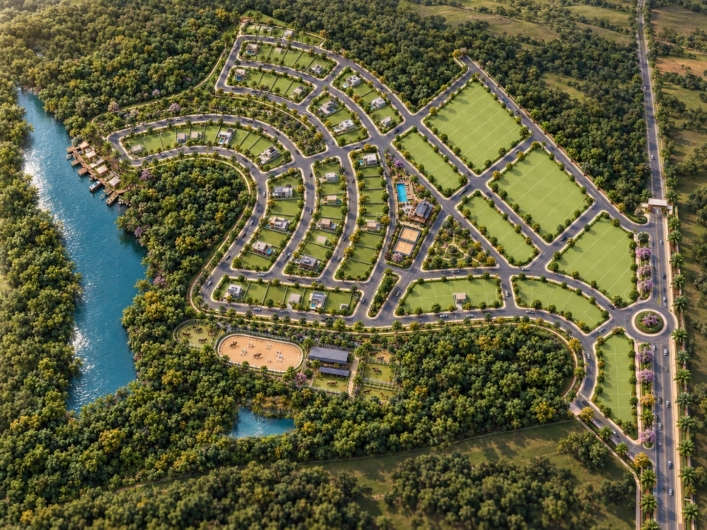

O próximo capítulo
é seu.
15 desafios. 45 estrelas. Um lugar para chamar de seu.
Sua jornada
Capítulo 1 de 5Recompensas exclusivamente virtuais. Sem compras com dinheiro, sorteios ou prêmios físicos.

Prêmios que abrem
novos caminhos.
Conclua capítulos para resgatar itens exclusivos. Use seus Sóis para personalizar a experiência.
Conquistas de capítulo
Vitrine de Sóis
Os Sóis são pontos do jogo, sem valor em dinheiro. Cada item só é comprado uma vez.
Meu refúgio.
Seu cantinho virtual evolui com suas conquistas.
Cenário de jogo em duas dimensões. Não é projeto de casa nem reserva de lote.
Meu passaporte.
Conquistas virtuais, para guardar e compartilhar.
Seu progresso é seu.
As conquistas ficam neste navegador. Exporte uma cópia para guardar ou importar em outro aparelho. Não há ranking oficial nem validação de prêmios físicos.
Compartilhar o cartão é opcional. O jogo não envia apelido ou resultados ao atendimento.
Revisitar “Um dia no Solaris”Quero conhecer o Solaris de perto
Um adulto pode entrar em contato com a equipe para conhecer os lotes e solicitar uma visita. Suas conquistas não serão enviadas.
Abrir atendimento ↗